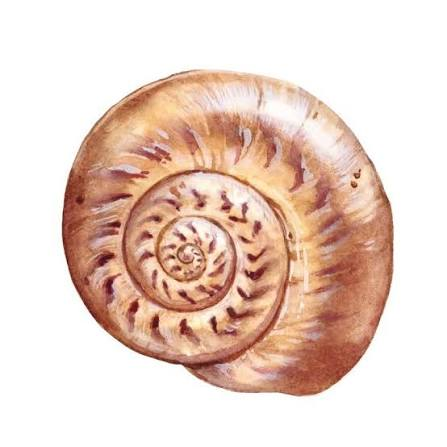

For more than 100 years the word Shell, our pecten emblem and distinctive red and yellow colours have visualised the Shell brand and promoted our values and the quality of our products and services all over the world The word Shell first appeared in 1891, as the trademark for kerosene shipped to the Far East by Marcus Samuel and Company. This small London business dealt originally in antiques, curios and oriental seashells. These became so popular – the Victorians used them to decorate trinket boxes in particular – that soon they formed the basis of the company’s profitable import and export trade with the Far East.